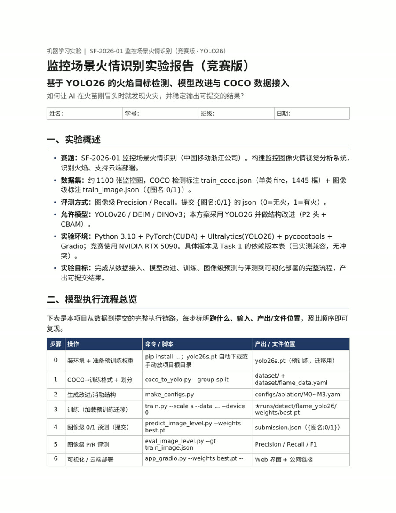

01监控场景火情识别系统
基于 YOLO26 的火焰目标检测与图像级判定流程，完成 COCO 数据接入、训练评测、消融实验与 Gradio 可视化。
AI · COMPUTER VISION · CREATIVE CODE
我是黄晨敏，浙江传媒学院人工智能专业学生。关注计算机视觉、AI 应用与富有表达力的数字体验。

01 / ABOUT
我喜欢从一个真实问题出发：整理数据、训练模型、搭建界面，再把复杂过程做成清晰可用的体验。
我的项目横跨计算机视觉、深度学习、本地知识库与多媒体智能体。相比只展示模型指标，我更关心一套方案能否被解释、被演示、被真正使用。
02 / SELECTED WORK

01基于 YOLO26 的火焰目标检测与图像级判定流程，完成 COCO 数据接入、训练评测、消融实验与 Gradio 可视化。
把视频转成可检索、可总结、可问答的本地知识库，串联 FFmpeg、Whisper、仓颉后端与大模型。
 03
03
基于 YOLO11 的人脸定位与表情分类系统，覆盖训练、实时检测和可视化推理，并探索大模型辅助分析。
仓颉语言实现的本地知识库学习助手，使用 TF-IDF 检索课程资料，支持离线回答与可选千问增强。
结合 MNIST CNN 与交互式界面，识别手写数字和运算符，并完成算式解析、计算与结果展示。
围绕数据标注、训练、预测和结果可视化搭建完整实验流程，沉淀可复用的视觉检测实践。
03 / CAPABILITIES
Python · C++ · JavaScript · HTML/CSS · 仓颉
PyTorch · YOLO · OpenCV · 目标检测 · 分类
RAG · Whisper · TF-IDF · 大模型 API · Prompt
Git · Gradio · 数据处理 · UI/UX · 技术文档